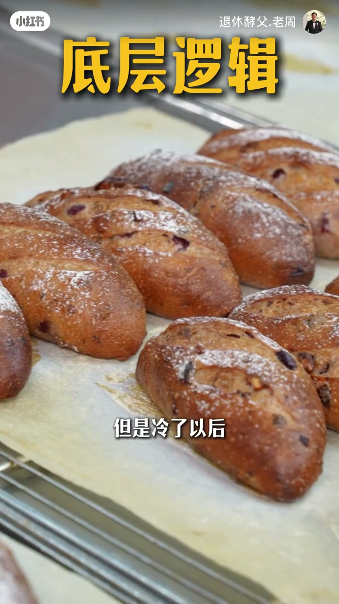
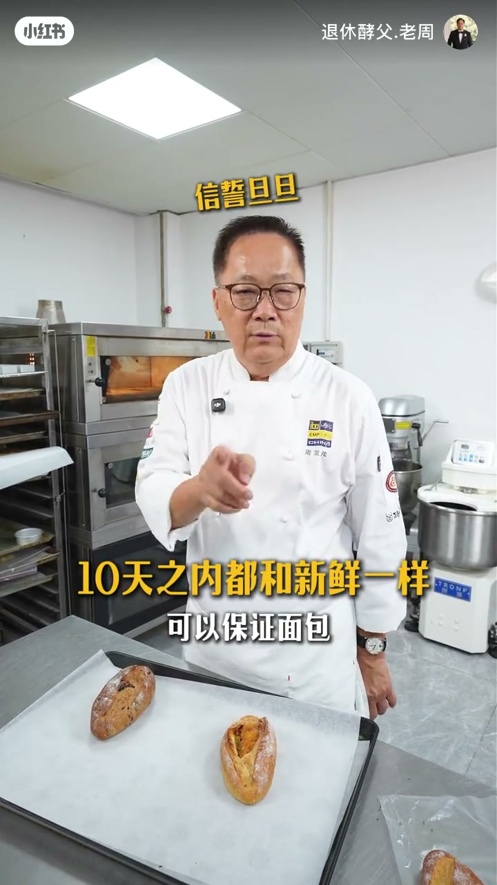
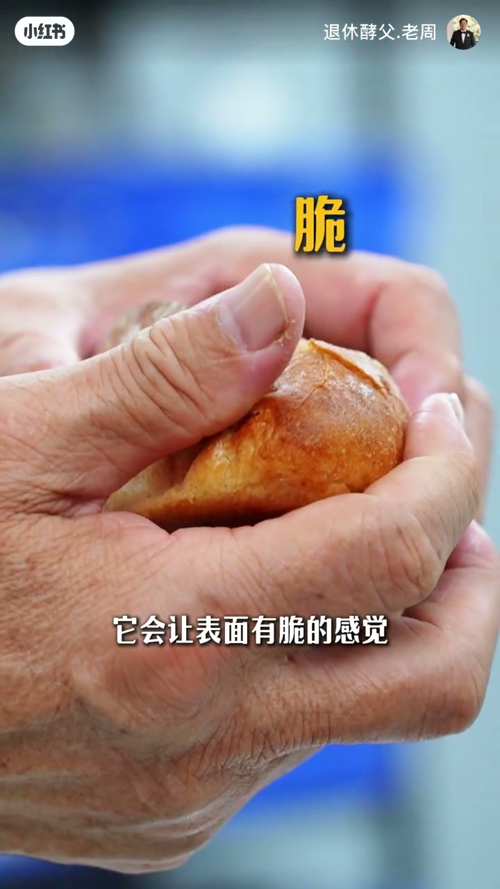
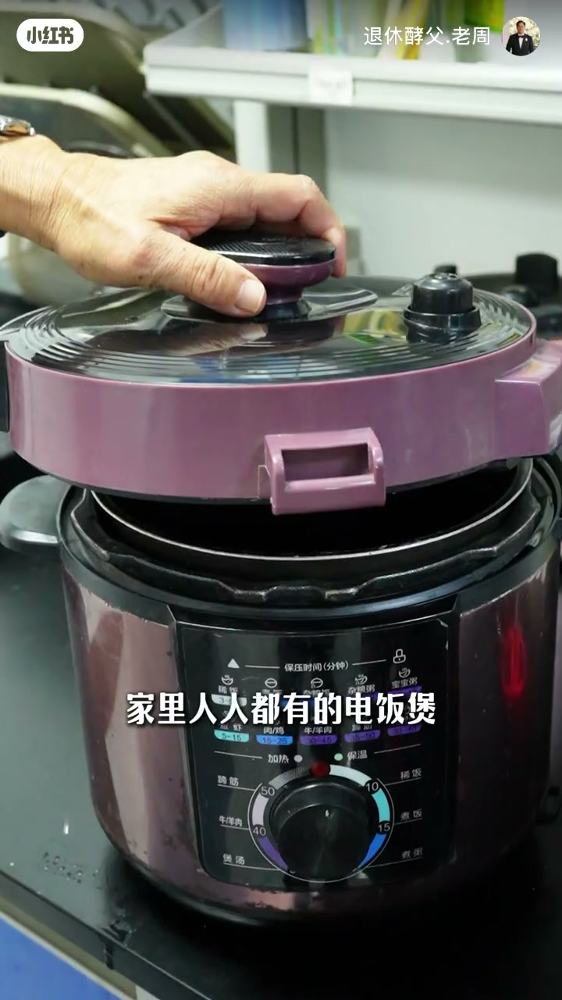
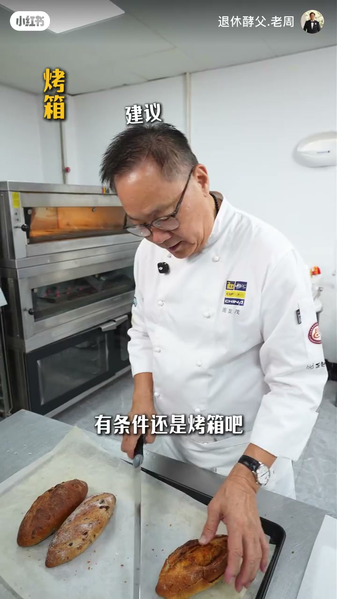
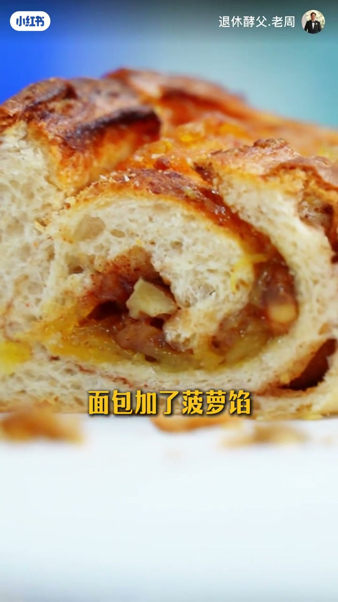

内容要点
退休酵父·周发茂用近3分钟讲清欧包隔天变硬的底层逻辑：冷却后淀粉老化。保存用零下18℃冷冻可撑约10天；复热忌微波炉，优先烤箱蒸汽/洒水，无烤箱则用家用电饭煲约15分钟。结尾划重点：冷冻储藏 + 正确复热。
知识结构
隔天变硬不是玄学：冷却后淀粉老化；贵价面包照样会硬。
零下18℃冷冻，约10天仍接近新鲜；冷藏加速变硬，不是首选。
忌微波炉脱水；烤箱喷蒸汽或洒水，面火约230℃/底火约180℃≈10分钟。
无烤箱用电饭煲约15分钟；能软内心，脆壳不如烤箱。
冷冻储藏 + 复热，才是吃欧包的完整闭环。
冷藏加速老化；冷冻暂停老化；复热用烤箱（或电饭煲）而不是微波炉——脆壳靠蒸汽/洒水，内心靠合适温度与时间。
00:00–00:40老化机制：冷了以后开始变硬
开场连问：第二天的面包要不要进冰箱？冷藏还是冷冻？为什么贵价面包放两天就硬？作者把底层逻辑钉死——面包一辈子都在和「老化」对抗：刚出炉柔软，冷却后淀粉开始重结晶，口感变硬梆梆。
「面包刚出炉的时候是柔软的，但是冷了以后就开始老化了。」

00:40–01:00冷冻保存约10天
要让面包「老得慢」，就放进零下18℃的冷冻室。作者保证：约10天之内吃，口感可以接近新鲜。这与「冷藏保存」的常见误区相反——冷藏往往加速老化。

01:00–01:40烤箱复热：蒸汽与脆壳
冻完怎么还原？最不能用的是微波炉——会脱水。专业做法叫复热：用烤箱，最好有蒸汽；家里没有蒸汽功能，表面洒一点水也行。口播参数：面火约230℃、底火约180℃（只能单温就调230），约10分钟。
「它会让表面有脆的感觉；如果家里没有蒸汽的烤箱，撒点水在表面也可以。」

01:40–02:20电饭煲备选约15分钟
没有烤箱？家里人人都有的电饭煲也能复热：放入后约15分钟。对比实验：烤箱复热的表皮更脆；电饭煲版本内心已软，但脆壳弱一档。「有条件还是烤箱」——一周冷冻后烤箱复热，作者戏称从「58岁变回18岁」。


02:20–02:55划重点：冷冻+复热
切开加了菠萝馅的欧包作案例：中国人常不爱单独抹果酱，所以欧包里常加馅。结尾划重点——愿意花大价钱买好面包，也必须学会复热；特别是欧包，记得冷冻储藏，复热好吃，才是最佳吃法。

完整转录（87段）
Whisper medium · 中文 · 已据画面字幕做术语校正，仍可能有识别误差。
我问问你啊
买了才第二天吃的面包
到底要不要放冰箱
就放在冷藏啊
放在冷冻呢
为什么这么贵的面包
买回去放两天就硬了
这些问题你肯定也遇到过
当然我也会教你一个法子
这是升学没教过的复热的办法
而且你家里肯定有这个东西
学校没教过
但你必须要知道的是
今天是面包储存和口感还原指南
首先大家要明白一个底层逻辑
面包一辈子啊
都跟一个关键事在对抗
那就是老化
面包刚出炉的时候是柔软的
但是冷了以后就开始老化了
所以有些人面包买回两天以后
硬梆梆了
这就是面包的老化了
这些人要老化硬道理
那你肯定要问啦
怎么让它不老呢
要面包老的慢的话
就放在零下18度冷冻的冰箱里面保存
可以保证你的面包
10天之内
都是同新鲜一样
但是冻完要什么还原呢
首先最不能用的就是微波炉
因为微波炉会脱水
可以烤一烤
我们主要的办法是用烤箱
叫做复热
这两个面包都是筋满满的面包
我们这种专业的烤箱是有蒸汽的
烤欧包打蒸汽是很必要的一个过程
它会让表面有脆的感觉
如果家里没有蒸汽的烤箱呢
撒点水在表面也可以了
烤箱前面一般面火230 底火180
如果家里没有这种上下火都要调的话
就是调230没事了
现在把面包放进去
要10分钟左右
我再教你一个没有烤箱的办法
家里人人都有的电饭煲
对 你们听错了
这是电饭煲
放在里面这里
调15分钟就可以了
烤盘里面是烤箱烤出来的面包
手上那个呢
是用电饭煲复热的面包
PKPK
哇 好棒
脆的
表皮脆里面软啊
有条件还是烤箱吧
我这面包放了足足有一个星期了
但是现在复热以后
这个状态有多好
从58岁变成了18岁了
这个是电饭煲烤出来的
皮就没那么脆了
但是它已经达到了复热的目的
除了皮的脆的感觉不一样
里面烤完的一个效果是一样的
这个我们是加了菠萝馅的
我们中国人不喜欢吃果酱
从奶油杀一个吃
所以逼着我们做欧式面包的人
都想尽办法里面加很多馅
珍惜哦
现在呢很多人是喜欢吃面包的
而且呢愿意花大价钱去买面包
但是呢一个好的面包
你必须要学会复热
特别是欧包
记得冷冻储藏
复热好吃
才是吃欧包最佳的方法
再见咯
下期我带你们看看我养的面包宠物